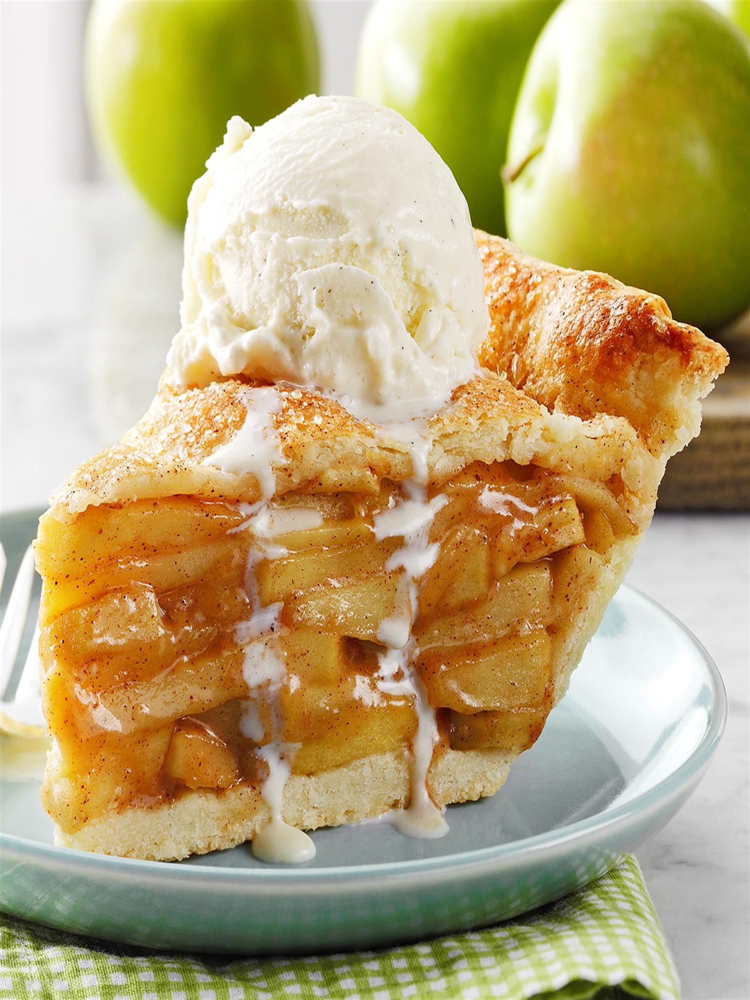

Vegan Apple Pie

Recipe for Vegan Apple Pie
This apple pie is delicious! With no animal products, the crust is very buttery and light. Serve right out of the oven, chilled, or slightly warmed.
Ingredients
- Crust:
- 2 ⅓ cups all-purpose flour
- 1 cup vegan margarine (such as Earth Balance)
- 1 tablespoon white sugar
- 1 teaspoon salt
- ¼ cup ice water
- Filling:
- 1 cup brown sugar
- ½ cup vegan margarine (such as Earth Balance)
- ¼ cup white sugar
- ¼ cup rice milk
- 3 tablespoons all-purpose flour
- 2 teaspoons ground cinnamon
- ½ teaspoon ground nutmeg
- 7 Granny Smith apples-peeled, cored, and sliced
Steps
- Combine 2 1/3 cups all-purpose flour, 1 cup vegan margarine, 1 tablespoon white sugar, and salt in a food processor; pulse until mixture clumps together. Pour water in slowly and pulse a few times until a dough forms.
- Transfer dough to a flat work surface; knead for 30 seconds and shape into a disk. Wrap with plastic wrap and refrigerate until firm, about 30 minutes.
- Preheat the oven to 325 degrees F (165 degrees C).
- Dust a flat work surface with flour. Roll dough out into two 10-inch crusts. Press 1 crust gently into a 9-inch pie plate.
- Combine brown sugar, 1/2 cup vegan margarine, 1/4 cup white sugar, rice milk, 3 tablespoons flour, cinnamon, and nutmeg in a saucepan; cook and stir over medium heat until margarine melts and brown sugar is dissolved, 3 to 5 minutes.
- Place apple slices in a large bowl. Pour brown sugar mixture on top; mix until apples are evenly coated. Pile apples into the bottom crust. Cover with second crust. Cut slits in the top crust with a sharp knife.
- Bake in the preheated oven until crust is golden brown and apples are semitranslucent, 45 to 60 minutes.